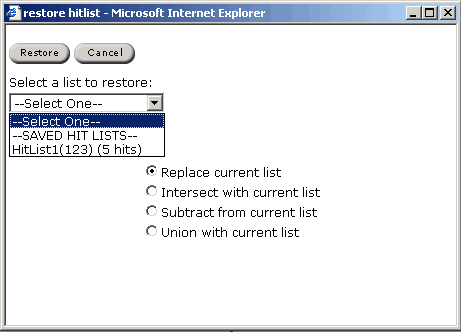

The hit list is displayed in list form.
Restore Hit List allows user to restore a hit list which was previously generated.
There are two options when restoring a hit list:
For more information about hit lists, please see Managing Hit Lists.
|
| Download ChemOffice Enterprise User's Guide (PDF) |
| Download ChemOffice Enterprise User's Guide (CHM) |
| CambridgeSoft
Corporation http://www.cambridgesoft.com Voice: (617) 588-9100 Fax: (617) 588-9360 support@cambridgesoft.com |